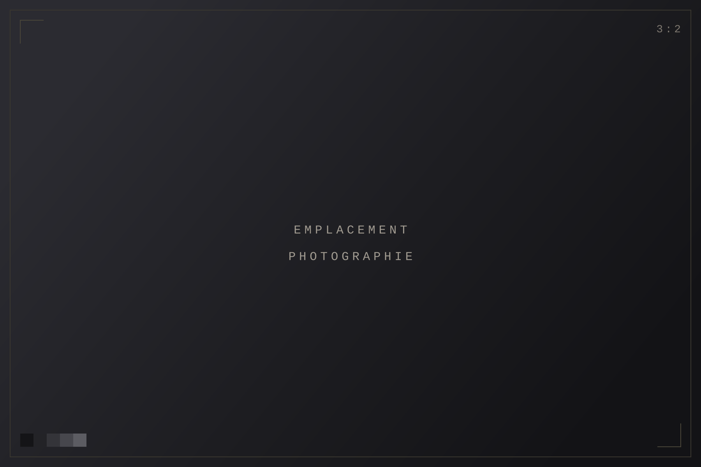

Événements
Les événements couverts
Un album par événement, publié après la séance, du plus récent au plus ancien.
Archive
Albums
Chaque album indiquera son titre, sa date, sa catégorie et le nombre de photographies retenues.



Aucun album publié
Le premier album sera mis en ligne après le prochain événement couvert. En attendant, le portfolio donne un aperçu des terrains photographiés.